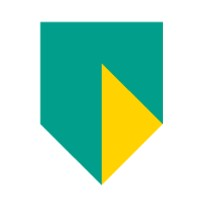

Forensic Data Scientist
WorkNederlands Forensisch Instituut
Applying data science and machine learning techniques to forensic investigations at the Dutch national forensic institute.
Hello, I'm
I am a |
Forensic Data Scientist at the Nederlands Forensisch Instituut. MEng in Artificial Intelligence from Maastricht University, with a background in data engineering, machine learning, and NLP. Co-founder of Weevi. Also: drone pilot & photographer.
My journey
From Maastricht lecture halls to forensic labs — a timeline of where I've been.
Nederlands Forensisch Instituut
Applying data science and machine learning techniques to forensic investigations at the Dutch national forensic institute.

ABN AMRO Bank N.V.
The ESG team at ABN AMRO is responsible for onboarding external sustainability data sources into the bank's main data platform. I set up data flows with control frameworks covering metadata validation, data quality monitoring, and adequate logging.

Harvest
During the period before my first outsourcing I gained certifications in Data Engineering and led an internal recruitment portal project — building a digital platform where candidates could upload and evaluate their technical challenges. This required project management, stakeholder management, and Azure cloud experience.

Lightyear
Set up a data pipeline within the newly adopted Databricks platform using (Py)Spark. Additionally worked in a scrum team on the strategy and architecture for implementing Reinforcement Learning and Multi-Integer Linear Programming — creating a model to optimise energy-saving and revenue strategies while the solar car charges from the grid.

Capgemini
Explored models and data types for Crop Classification in satellite imagery. Deep Learning was used to implement and benchmark models, with a particular focus on evaluating Vision Transformers (ViT) against traditional CNN architectures.
Lightyear
Built a Business Intelligence tool that searches and analyses patents using high-level queries — removing the need for in-depth knowledge of patent classifications. Used NLP and unique per-patent embeddings; results stored in a data lake via PySpark and visualised in an intuitive competition-landscape dashboard.

Maastricht University
Led hands-on tutorials on campus and online. Graded assignments and provided feedback. Courses: Introduction to Computer Science (Java & Python), Calculus, Data Structures & Algorithms, Software Engineering.
Maastricht University
2-year Master's programme focused on simulating human intelligence for a wide variety of applications — from game design to patient diagnosis. Graduated with a thesis on deep learning for satellite crop classification.

Reykjavik University
Exchange semester in Iceland. Courses: Cryptography, Compilers, Computer Networks, Deep Learning.
Maastricht University
3-year Bachelor's programme offering a unique combination of artificial intelligence, computer science and mathematics.
AI Agents Fundamentals
Professional Scrum Master™ I (PSM I)
Azure Fundamentals (AZ-900)
Databricks Lakehouse Fundamentals
Data Intelligence Track
What I've built
Research prototypes, engineering tools, and side explorations.
Novel application of traditional U-Net on DNA EPG profiles for allele calling.
Dit artikel onderzoekt de mogelijkheid van Vision Transformers om het probleem van gewas herkenning in satellietbeelden op te lossen. Met de toenemende behoefte aan verbetering van voedselproductie kunnen remote sensing technieken boeren beter inzicht geven in hun landgebruik. Een basismodel, het huidige best presterende model en het nieuwe Segmenter-model zijn getraind en geëvalueerd met behulp van een benchmark dataset, wat inzicht geeft in hun leervermogen en de valkuilen die sommige gewassoorten voor een model kunnen vormen.
Business intelligence tool that automates patent search, semantic clustering, and competitive landscape analysis. Built for Lightyear's internal innovation team.
In dit onderzoeksproject, met een team van 6, was het doel een end-to-end pipeline te ontwikkelen om een model te trainen in het herkennen van schadelijke aanrakingen op een siliconenhuid. De helft van het project bestond uit het creëren van een realistische simulatie van de huid waarin krachtsensoren waren ingebed. Met deze simulatie konden scenario's worden gecreëerd om trainingsgegevens en labels voor het model te genereren.
Personal aerial photography and videography projects. Check the Portfolio page for footage and shots from various locations around the Netherlands.
Get in touch
Whether you want to collaborate, talk AI, or just say hello — my inbox is always open.
Or send me an email directly
Say Hello 👋